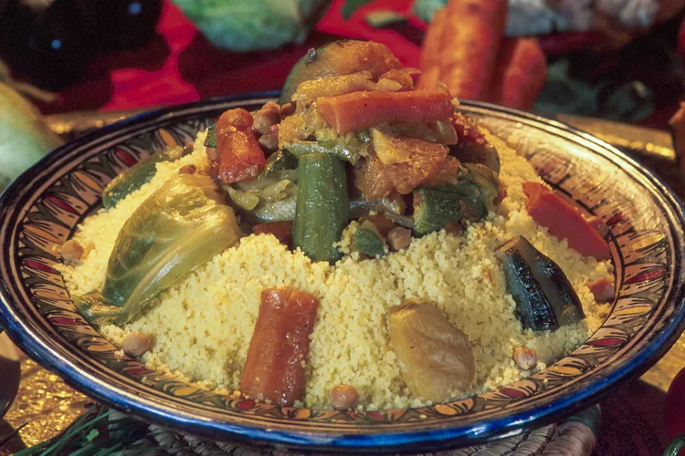

Moroccan Couscous

Description
This hearty and flavorful Moroccan couscous is a classic dish that is
perfect for any occasion. It is made with a variety of vegetables, such as
carrots, zucchini, and peas, and is often served with a side of meat, such
as lamb or chicken. The couscous is cooked in a fragrant broth that is
infused with spices like cumin, coriander, and turmeric.
Ingredients
- 1 cup couscous
- 1 3/4 cups vegetable broth (or water with bouillon cubes)
- 1 tablespoon olive oil
- 1 teaspoon ground cumin
- 1/2 teaspoon ground coriander
- 1/4 teaspoon ground cinnamon
- Pinch of saffron threads (optional)
- Salt and pepper to taste
-
Your choice of vegetables (e.g., carrots, zucchini, bell peppers,
chickpeas)
- Optional: Cooked meat (e.g., chicken, lamb)
Steps
-
Prepare the Couscous:
- Bring the vegetable broth to a boil.
-
In a bowl, combine the couscous, olive oil, spices, and salt and
pepper.
-
Pour the hot broth over the couscous, cover, and let it sit for 5-10
minutes.
- Fluff the couscous with a fork.
-
Sauté the Vegetables:
- Heat some olive oil in a pan.
- Add your chosen vegetables and cook until tender-crisp.
-
Assemble and Serve:
- Combine the cooked couscous with the sautéed vegetables.
- Add cooked meat if desired.
-
Serve hot, garnished with fresh herbs like cilantro or parsley.